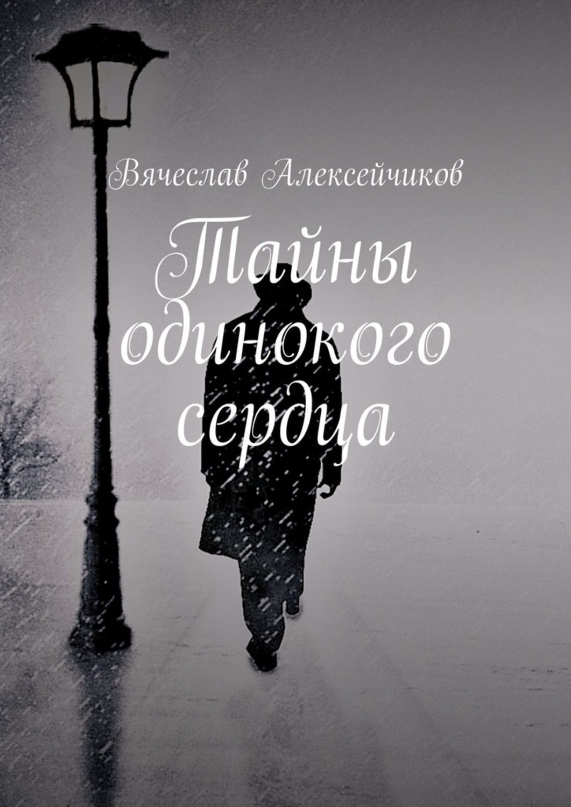

«Между строк» — вторая книга
Слова о любви потеряли былую силу
из стихотворения «Без слов»

«Тайны одинокого сердца» — первая книгаОстрой бритвой в гневе становятся слова
из стихотворения «Слова»
Но призраками прошлого мы продолжим жить
из стихотворения «Призраки прошлого»